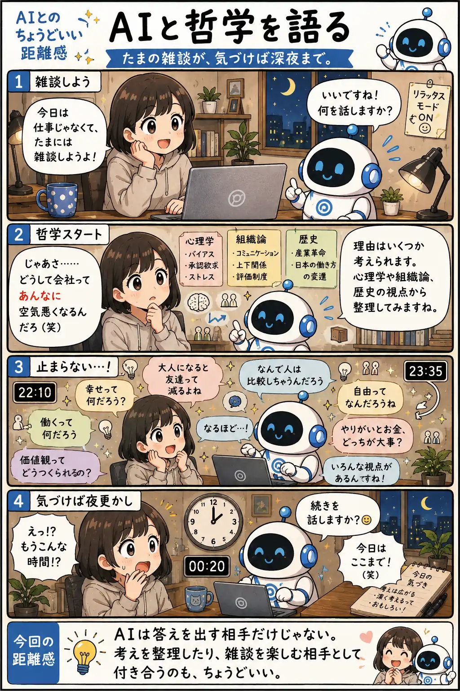

#065
AIと哲学を語る
たまの雑談が、気づけば深夜まで。

メモ
AIというと、質問に答えてもらう相手というイメージが強いかもしれません。
でも、正解のないテーマを一緒に考える相手として付き合ってみると、心理学や歴史など様々な視点から会話が広がり、自分では思いつかなかった考え方に出会えることがあります。
答えを決めてもらうのではなく、自分の考えを整理したり広げたりする相手として使う。そんな雑談も、AIとの面白い距離感のひとつです。
今回の距離感
AIは答えを出す相手だけじゃない。考えを整理したり、雑談を楽しむ相手として付き合うのも、ちょうどいい。